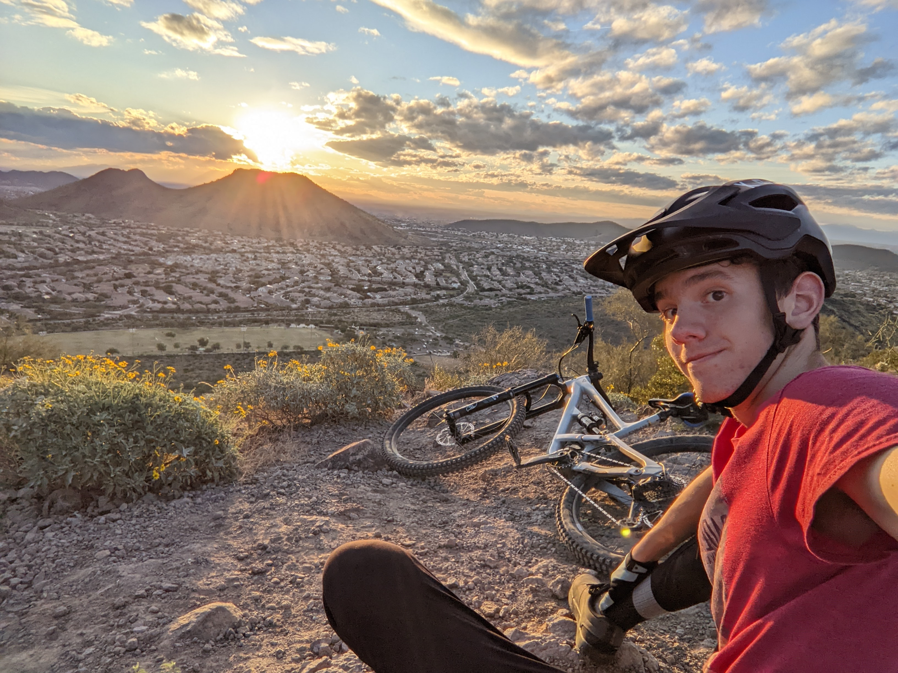
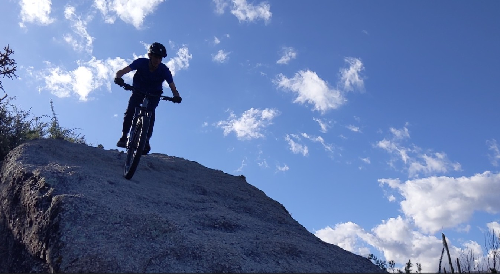

I’m Sam
Learn more about Sam, his background, and why mountain biking is one of his favorite ways to explore the outdoors.

My Adventures
Follow Sam’s latest rides, trail days, photos, videos, and outdoor experiences.
Welcome to Sam’s mountain biking site — a place for trail rides, gear, outdoor adventures, and everything MTB.
View Adventures
Learn more about Sam, his background, and why mountain biking is one of his favorite ways to explore the outdoors.

Follow Sam’s latest rides, trail days, photos, videos, and outdoor experiences.
This site shares Sam’s riding experiences, favorite bike setup, and adventures from the trail. Whether it is a quick local ride or a bigger outdoor trip, this is where the story continues.